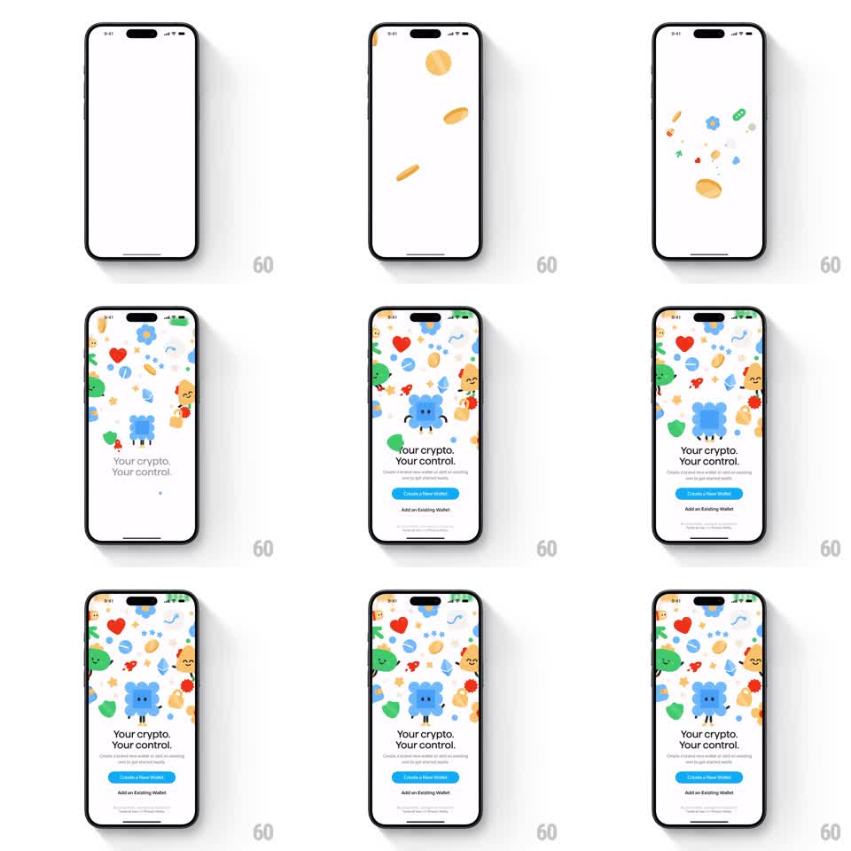

Media
Frame-by-frame

Rebuild this animation 1:1: Family's onboarding splash - 3D coins tumble down a white screen, then a dense burst of cute character illustrations cascades in to fill the top two-thirds while the headline and buttons stagger into place below.

Rebuild this animation 1:1: Family's onboarding splash - 3D coins tumble down a white screen, then a dense burst of cute character illustrations cascades in to fill the top two-thirds while the headline and buttons stagger into place below. ## Integration Integration: stack-agnostic spec - springs given as stiffness/damping, timed motions as duration + curve; map every value to your framework and animation library of choice. ## Scene White screen. Cast: gold 3D coins, a blue sheep-like mascot, hearts, gems, stars, rockets, blob characters (green, red, yellow). Bottom block: "Your crypto. Your control." headline, subcopy, blue "Create a New Wallet" button, "Add an Existing Wallet" text action, fine print. ## Motion spec Pattern: cascading illustration burst + staggered UI, ~2.5s. - 3-4 coins fall from the top with gravity, rotating on their axes, bouncing once (500ms). - The illustration cast bursts in from the top and sides (spring ~240/16), 30ms stagger, each landing at a fixed tilt in a dense collage that fills the upper two-thirds; the sheep mascot lands dead center last with a slightly bigger scale. - Headline types in... no - headline slides up and fades (300ms), subcopy 100ms later. - Buttons stagger in bottom-up (Create first, 150ms later Add Existing), spring ~350/22. - Fine print fades in last (200ms). ## Calibration - The collage is dense but never covers the headline block - the lower third stays clean. - Each illustration has a fixed final tilt; they settle, they don't keep floating. ## Reduced motion Collage fades in fully composed (400ms); UI fades in after. ## Don't miss - Coins arrive before the characters - they're the overture. Merging the two entrances flattens the sequence. - The blue mascot is the hero: center, largest, last. Demoting it breaks the brand moment.